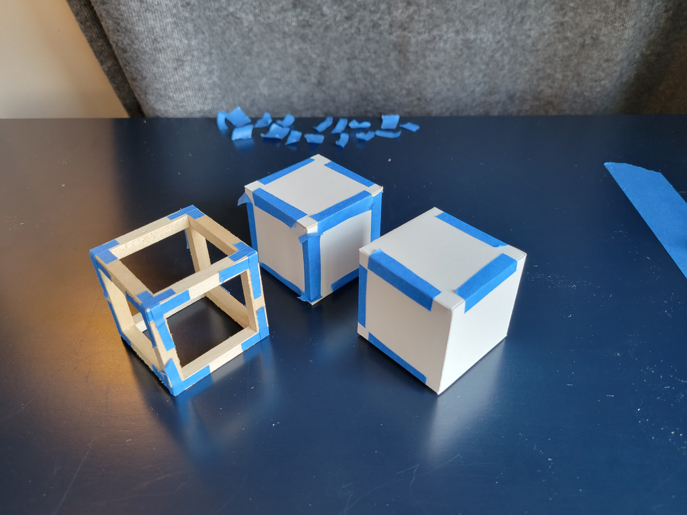

Keenan Jackson - Studio Archive
CV
Grants, Residencies, and Awards
2020
- Queer Materials Lab Artist Residency @ Tyler School of Art, Philadelphia, PA
2018
-
Wassaic Artist Residency, Wassaic, NY
2017
-
Laboratory Artist Residency, Spokane, WA
-
Ox-Bow Fall Artists’ Residency, Saugatuck, MI
-
Officina Stamperia del Notaio Artists’ Residency, Tusa, Sicily
- Vermont Studio Center Residency and Artist Grant, Johnson, VT
2015
- Susan B. Coslett Fellowship, University of Pennsylvania, PA
- Institute of Contemporary Art Graduate Lecturer Fellowship, Philadelphia, PA
- Groupe de Recherche d’art Intégré Endowment for the Arts, Philadelphia, PA
- FIGMENT First Night Boston Grant, Boston, MA
2014
- FIGMENT First Night Boston Grant, Boston, MA
Teaching
Adjunct Professor
- 2022-2023 - Pennsylvania College of Art and Design, Lancaster, PA
- 2019-2021 - Drexel University, Philadelphia, PA
- Design I (Black and White Design)
- Design II (Color Theory)
- Design III (Three-Dimensional Design)
- 2016 - Kutztown University of Pennsylvania, Kutztown, PA
- Introduction to Sculpture
- Sculpture Studio I, II, & III
- Independent Study: Figural Sculpture
- Independent Study: Sculpture in Public Space
- 2016 - University of Pennsylvania, Philadelphia, PA
Learning Design
- 2022-2025 - Harvard Medical School, Boston, MA
- 2022 - Pennsylvania College of Art and Design, Lancaster, PA
Select Exhibitions
2021
- Unprecedented Times, Group Exhibition
Science Center, Philadelphia, PA
2020
- Bottom of the Ninth, Group Exhibition
Pinch-Hitter Projects, Philadelphia, PA - 20/20 Mail Art, Group Exhibition
Temple School of Art and Architecture, Philadelphia, PA
2019
- Spitting Distance, Two-Person Exhibition
Napoleon, Philadelphia, PA
- Stonewall @ 50, Group Exhibition
Pearlstein Gallery, Philadelphia, PA
- Ad Astra Per Aspera, Group Exhibition
Maxon Mills, Wassaic, NY - Lip-Sync Parade: Queer meditations on history and visibility, Group Exhibition
Curated by Doah Lee
Fjord Gallery, Philadelphia, PA
2018
- Into the Woods We Go, Group Exhibition
Da Vinci Art Alliance, Philadelphia, PA - What Does Pride Mean to You?, Group Exhibition
City Hall, Philadelphia, PA - ArtBangall, Group Exhibition
Hunns Lake Project Space, Bangall, NY - Future Defecations: Riverfront Park Public Restroom Forum, Solo Exhibition
RAC Project Space, Spokane, WA
2017
- Vacation in November, Group Exhibition
Little Berlin Annex, Philadelphia, PA - Loaded Dice, Two-Person Exhibition
Schultz Project Space, Johnson, VT - 30 Under 30, Group Exhibition
Virdian Artists, New York, NY
2016
- Happiness Greens Our Irrelevance, Group Thesis Exhibition
Curated by Hamza Walker
MAMA Gallery, Los Angeles, CA - PLEASE COME IN, Group Exhibition
Space 1026, Philadelphia, PA - Cleft, Solo Exhibition
Gallery 224 at University of the Arts, Philadelphia, PA - Lady in the Water II: Maiden Voyage, Collaborative Two-Person Exhibition
New Boon(e), Philadelphia, PA
2015
- Video Snack 5, Group Screening
Vox Populi, Philadelphia, PA - Joint Custody, Group Exhibition
Fox Gallery, Philadelphia, PA - Lady in the Water, Collaborative Two-Person Exhibition
Physical Lab, Philadelphia, PA
Curatorial Projects
2020
- Pa’lante
Heather Raquel Phillips (solo)
319 Building Exterior, Philadelphia, PA
2019
- #QueerLifePHL co-curated with Linda Lee Alter and Irving Chan Gomez
Group Exhibition (50+ artists)
William Way LGBT Art Gallery, Philadelphia, PA
- Venus Rising
Gwen Shockey (solo)
Practice Gallery, Philadelphia, PA - Chinatown Sailor Moon
Doah E. Lee (solo)
Practice Gallery, Philadelphia, PA
2017
- Rest Belt
Ryan Flores, Manal Kara, Fran Lightbound, Daniel Luedtke, Leah Mackin, Liz McCarthy, Michael Milano
Ohio service plazas off eastbound I-80, OH
2016
- Picket Fences
Gerard Silva (solo)
William Way LGBT Art Gallery, Philadelphia, PA
2015
- EchoLocation *
Rich Hogan, Doa E. Lee, Sarah Legow, Heather Raquel Phillips
Grizzly Grizzly, Philadelphia, PA
- Uncommons *
chukwumaa, E. Jane, Shaina Gates, Kaitlin Pomerantz, Marianna Williams
Little Berlin, Philadelphia, PA
